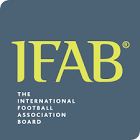

|  | International Football Association Board |
| Ethnic | xxxx |
| Job | xxxx Football Agency |
| Desc | xxxx |
Affiliation
| Location | xxxx |
2018 03 03 Retrieve
[Video Assistant Referees [VAR] are set to feature at World Cup 2018] The IFAB unanimously approved the use of video assistant referees at its 132nd Annual General Meeting that took place at FIFA’s headquarters in Zurich today. This landmark meeting, chaired by FIFA President Gianni Infantino, represents a new era for football with video assistance for referees helping to increase integrity and fairness in the game. Prior to taking its decision, the members of The IFAB was presented with the results of the independent analysis of the use of VARs conducted by Belgian university KU Leuven since the beginning of the VAR experiment in March 2016. The philosophy of VARs is ‘minimum interference - maximum benefit’ which aims to reduce unfairness caused by ‘clear and obvious errors’ or ‘serious missed incidents.
2018 03 09 Retrieve
[Is Guardiola allowed to wear a yellow ribbon?] Players must not reveal undergarments that show political, religious, personal slogans, statements or images, or advertising other than the manufacturer`s logo. For any offence the player and/or the team will be sanctioned by the competition organiser, national football association or by FIFA.
- 2019 05 29
- UEFA has asked FIFA and the International Football Association Board (IFAB) to review regulations regarding concussion. Napoli goalkeeper David Ospina was also taken to hospital after a Serie A game against Udinese in March when he collapsed having attempted to play on after sustaining a head injury
2019 06 21 Retrieve
[IFAB confirms Women’s World Cup goalkeepers will not be booked if they move off their line during a penalty shoot-out] The IFAB board of directors today approved a request from FIFA for a temporary dispensation relating to Kicks from the Penalty Mark (KFPM) in Law 10 - Determining the Outcome of a Match at the FIFA Women’s World Cup 2019. The IFAB fully supports goalkeepers being penalised for not conforming with the Laws of the Game and gaining an unfair advantage. However, for any KFPM during the knockout stages of the ongoing FIFA Women’s World Cup 2019 in France, a temporary dispensation has been given to FIFA from the requirement to caution a goalkeeper who is penalised for an offence which results in a kick being retaken.
2020 03 01 Retrieve
[Will away goals count in the Carabao Cup semi-finals?] In the semi-final ties, if the aggregate score is level at the end of the second game no extra time shall be played and the tie shall be decided by the taking of kicks from the penalty mark in accordance with procedures as approved by IFAB
2020 05 08 Retrieve
However, to avoid disruption to the game, each team will only have three opportunities to make substitutions; substitutions may also be made at half-time. Where competition rules allow an additional substitution in extra time, teams will each have one additional substitution opportunity
In relation to competitions in which the video assistant referee (VAR) system is implemented, these competitions are permitted to cease its use upon restart at the discretion of each individual competition organizer. However, where VAR is used, all aspects of the Laws of the Game and, by extension, the VAR protocol will remain in place
2020 05 08b Retrieve
[IFAB approves use of five substitutes per match once football returns after coronavirus outbreak] The temporary amendment comes into force with immediate effect, and has been made as matches may be played in a condensed period in different weather conditions, both of which could have impacts on player welfare
2020 06 15 Retrieve
[Why has the five-substitute rule been introduced?] The COVID-19 pandemic has had a far-reaching impact on daily life, including sport, around the world. As many countries begin to emerge from this situation, the focus is slowly turning to the resumption of football competitions that have been affected by the virus. When competitions resume, matches may be played in a condensed period (e.g. to reduce the impact on future competitions) and in different weather conditions, both of which could have an impact on player welfare
2020 06 18 Retrieve
[Handball rules updated by IFAB for 2020-21 season] ‘Accidental’ handball by an attacking player (or team-mate) is only penalised if it occurs ‘immediately’ before a goal or clear goal-scoring opportunity. If an attacking player accidentally touches the ball with their hand or arm and the ball then goes to another attacking player and the attacking team immediately scores, this is a handball offence. It is not an offence if, after an accidental handball, the ball travels some distance (pass or dribble) and/or there are several passes before the goal or goal-scoring opportunity
2020 07 15 Retrieve
[Five substitutes to be allowed next season] Following the decision taken on 8 May 2020 to give competitions scheduled to be completed in 2020 the option of allowing teams to use up to five substitutes, the IFAB Board of Directors had agreed to review whether to extend this option further. On the basis of this in-depth review based on stakeholder feedback and analysis of the impact of COVID-19 on competition calendars, the IFAB Board of Directors has approved to extend the option to competitions scheduled to be completed by 31 July 2021 and international competitions scheduled in July/August 2021. The main reason for the temporary amendment to Law 3 - The Players was the impact on player welfare of competitions being played in a condensed period and in different weather conditions. The recent review has shown that the reasons for the temporary amendment remain valid and the impact on player welfare is likely to continue into 2021.